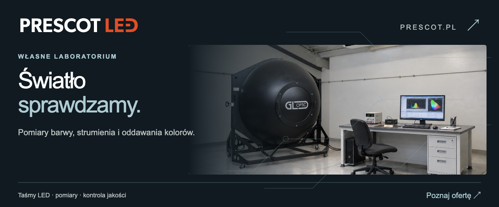

Radosław Narwojsz
Wiceprezes Zarządu
Producent taśm LED
Polska produkcja · własne laboratorium
Polska produkcja · własne laboratorium
| Radosław Narwojsz Wiceprezes Zarządu | Producent taśm LED Polska produkcja · własne laboratorium |
| TAŚMY LED / PRODUKCJA / LABORATORIUM | prescot.pl ↗ |
 |
| PRESCOT Sp. z o.o. · ul. Wileńska 1, 11-500 Giżycko NIP 8451939947 · REGON 280351610 · KRS 0000319434 Sąd Rejonowy w Olsztynie, VIII Wydział Gospodarczy KRS · Kapitał zakładowy: 200 000 zł Facebook / prescot.gizycko · www.prescot.pl |